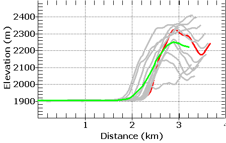

Parallel Profiles
Two ways to start
You must be careful that you first profile runs perpendicular to the features, and that the features remain consistent over the area selected.
|
|
LIDAR map, showing the original profile in cyan and 5 additional profiles on either side. You can specify the profile spacing, in this case 25 m. |
 |
Original profile in red, 10 additional profiles in gay, and
the average of the 11 profiles in lime green. The lidar data is extremely noisy (vegetation), so the average in green might be a better estimate of the general trends. The part of the profile closest to the shoreline shows the least variability. |
|
 |
Parallel profiles from SRTM along a range front fault scarp in Utah. |
 |
Profiles across the SE Indian Ocean Ridge. These are 50 km apart. This smooths out variation (noise) and shows the general patterns better. |
Last revision 5/8/2021